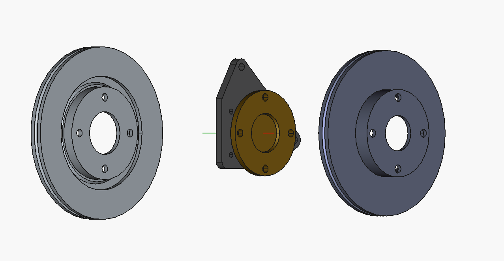

Last Chance Speed Co.
Drive. Build. Repeat.
Drive. Build. Repeat.
FB RX-7
A rear disc conversion kit for SA/FB RX-7 chassis — designed around real-world installation, serviceability, and motorsport use.
View Status
The Goal
The FB rear disc conversion is being developed for builders who want a practical brake upgrade without turning the project into a full custom fabrication job.
Strong parts. Clear instructions. An install path that makes sense.
Design Priorities
Designed around first-generation RX-7 chassis packaging and axle geometry.
Built around components that can be maintained, replaced, and sourced.
Bracket and hardware layout focused on repeatable, documented installation.
Developed with autocross, street performance, and real car use in mind.
Install guide, parts list, torque specs, and fitment notes included.
Built toward limited production runs through Last Chance Speed Co.
What's Included
| Item | Details |
|---|---|
| Caliper Brackets | Rear caliper mounting brackets designed for the FB RX-7 axle setup |
| Mounting Hardware | Hardware package for bracket installation and assembly |
| Install Guide | Step-by-step documentation with photos, fitment notes, and torque specs |
| Parts List | Compatible service parts and required components listed clearly |
| Optional Add-ons | Future options may include lines, templates, or full install packages |
| Support | Install support and fitment help through LCSC documentation and direct contact |
Development
Hardware
Early bracket hardware in development.

Kit developed around real first-gen RX-7 use.

Fitment, clearance, and install details documented during testing.
Why This Kit
Many first-gen RX-7 builds need brake upgrades, but not every car needs an expensive full custom race system. This kit provides a practical rear disc conversion path with usable parts and clear documentation.
The goal is not just to sell brackets — it's to provide a complete install path: what parts are needed, how they fit, what to check, and how to maintain the setup.
Contact
The FB RX-7 rear disc conversion is currently in development.